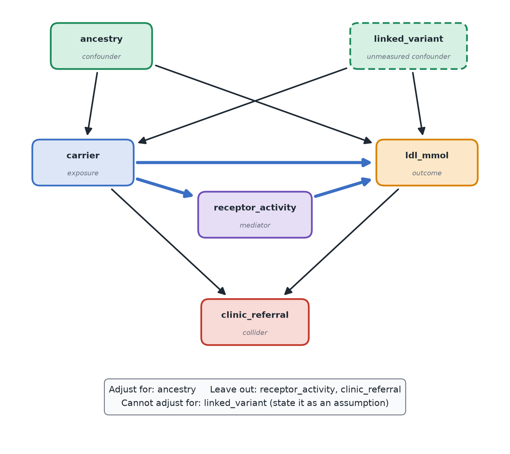

How to: draw and use a causal diagram
Use this when: you want to know the effect of one variable on another from observational data (nobody randomized the exposure) and need to decide which other variables to adjust for. If the exposure was randomized, you don't need this; see Experiments vs. observational data. The ideas are on the Causal diagrams page.
To see what goes wrong when you adjust for the wrong variable, with numbers, use the confounder, mediator, collider notebook (download it and open it in Jupyter, VS Code or Colab).
Steps
- Write down the exposure and the outcome: the effect you want, as "X on Y".
- List every other variable that might matter, including ones you did not measure. Use the questions from the course page: does it cause the exposure? the outcome? both? is it a consequence of either? Check timing: causes come before effects.
- Write each belief as an arrow
(cause, effect)in a list. An arrow means "directly causes". Leave an arrow out only when you are willing to assume there is no direct effect. - Let the code label each variable's role and suggest what to adjust for.
- Check the result with a proper tool (DAGitty, below), especially if the diagram has more than a handful of variables.
- Estimate the effect with a regression that includes the exposure plus the adjustment set, and state the assumptions you made.
Code: roles and a first adjustment set
The diagram here is Mia's: does carrying the LDLR variant raise LDL cholesterol? Ancestry affects both (confounder), the variant lowers LDL-receptor activity which raises LDL (mediator), a patient is referred to the lipid clinic when they carry the variant or have high LDL (consequence of both), and a nearby variant in linkage disequilibrium with Mia's, which nobody genotyped, affects LDL and travels with the studied variant (unmeasured confounder):

from collections import defaultdict
exposure, outcome = "carrier", "ldl_mmol"
unmeasured = {"linked_variant"}
edges = [ # (cause, effect)
("ancestry", "carrier"), ("ancestry", "ldl_mmol"),
("carrier", "receptor_activity"), ("receptor_activity", "ldl_mmol"), ("carrier", "ldl_mmol"),
("carrier", "clinic_referral"), ("ldl_mmol", "clinic_referral"),
("linked_variant", "carrier"), ("linked_variant", "ldl_mmol"),
]
children, parents = defaultdict(set), defaultdict(set)
for cause, effect in edges:
children[cause].add(effect)
parents[effect].add(cause)
def reachable(start, graph):
seen, stack = set(), [start]
while stack:
for nxt in graph[stack.pop()]:
if nxt not in seen:
seen.add(nxt)
stack.append(nxt)
return seen
common_causes = reachable(exposure, parents) & reachable(outcome, parents)
after_exposure = reachable(exposure, children)
after_outcome = reachable(outcome, children)
roles = {}
for v in sorted({name for edge in edges for name in edge} - {exposure, outcome}):
if v in common_causes:
roles[v] = "confounder"
elif v in after_exposure and outcome in reachable(v, children):
roles[v] = "mediator"
elif v in after_exposure and v in after_outcome:
roles[v] = "collider (consequence of both)"
elif v in after_exposure or v in after_outcome:
roles[v] = "consequence of exposure or outcome"
else:
roles[v] = "unrelated / other"
for v, role in roles.items():
print(f"{v:18s} {role}{' (UNMEASURED)' if v in unmeasured else ''}")
confounders = {v for v, role in roles.items() if role == "confounder"}
adjust_for = sorted(confounders - unmeasured)
print("\nadjust for:", adjust_for)
print("unmeasured confounders you cannot adjust for:", sorted(confounders & unmeasured))Code: estimating the effect
import pandas as pd
import statsmodels.formula.api as smf
df = pd.read_csv("my_data.csv")
naive = smf.ols(f"{outcome} ~ {exposure}", data=df).fit()
adjusted = smf.ols(f"{outcome} ~ {' + '.join([exposure] + adjust_for)}", data=df).fit(cov_type="HC3")
for label, model in [("unadjusted", naive), ("adjusted", adjusted)]:
low, high = model.conf_int().loc[exposure]
print(f"{label:10s} effect of {exposure}: {model.params[exposure]:.2f} (95% CI {low:.2f} to {high:.2f})")Reading the output
Example output on made-up data where the true effect of carrying the variant is 0.5 mmol/L:
ancestry confounder
clinic_referral collider (consequence of both)
linked_variant confounder (UNMEASURED)
receptor_activity mediator
adjust for: ['ancestry']
unmeasured confounders you cannot adjust for: ['linked_variant']
unadjusted effect of carrier: 1.10 (95% CI 0.96 to 1.24)
adjusted effect of carrier: 0.49 (95% CI 0.39 to 0.59)- The two estimates differ a lot. Ancestry raises both the chance of carrying the variant and LDL (through diet and environment), which inflates the apparent effect when you just compare carriers with non-carriers; adjusting for ancestry recovers the true effect. (In this made-up data the linked variant doesn't actually exist; in real data, an unmeasured confounder would bias the adjusted estimate too.)
- Confounders (common causes) are what you adjust for. Leaving one out biases the estimate; here the unadjusted estimate is more than double the true 0.5.
- Mediators are not adjusted for if you want the total effect of the exposure: they carry part of the effect you are trying to measure.
- Colliders (consequences of both) are never adjusted for: doing so creates a false association between exposure and outcome.
- Unmeasured confounders can't be adjusted for. Say so explicitly: the estimate is only causal if their influence is negligible, or if you can reason about its direction. This assumption can't be tested from the data, which is why the diagram is written down before the analysis.
Check it with DAGitty
The code above is a first-pass heuristic (common causes of exposure and outcome, minus anything that comes after the exposure). It is not the full backdoor criterion and can miss cases, such as variables that block a path only in combination or collider-induced biases that don't fit this simple pattern.
For anything beyond a small diagram, paste your edges into DAGitty (free, runs in the browser; also available as an R package, dagitty). It draws the diagram, lists the minimal adjustment sets, and flags paths that stay open. It is also the easiest way to see the picture.
If it goes wrong
- You can't agree on an arrow: keep both versions, run the analysis under each, and see whether the conclusion changes.
- The adjustment set includes an unmeasured variable: adjustment can't identify the effect from these data alone. Options are a better design (randomization), a different identification strategy (an instrument, a natural experiment), or an honest statement that the estimate is only an association.
- You were tempted to adjust for everything available: that is exactly how mediators and colliders slip in. Adjust for what the diagram says, nothing more.
- Diagram drawn after looking at the results: it will tend to justify what you found. Draw it first, from knowledge of the subject, ideally with someone who knows the biology.
- The goal is prediction, not an effect: you don't need any of this; see Prediction vs. explanation.